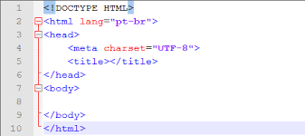

Menu
PÁGINA INICIAL
TAGS
CALENDÁRIO
FORMULÁRIO
SOBRE NÓS
LISTA DE TAGS
Explicando Tags
<!DOCTYPE>
Tem como objetivo mostrar ao navegador qual versão do html ira ser usado
<html lang="pt-br">
definir qual linguagem ira ser usada em todo processo
<Meta charset="UTF-8">
Tag utilizada para comunicar aos naegadores qual e o
formata de codificação utilizado
<head>
cabeçalho da pagina que ira ser editada
<body>
o corpo da pagina( o texto que ira ser introduzido)
<a ref="nome.html>
hospedar o direcionamento para outra pagina
<background color>
Colocar a cor desejada ao fundo da pagina web
<b>
Deixar o texto em
(negrito)
<i>
Deixar o texto em
(italico)
<u>
Deixar o texto
(sublinhado)
<br>
Pular uma linha apos uma frase
<p>
Utilizar para demarcar um parágrafo
<font>
Para configurar o tipo de fonte, cor e tamanho das letras
<Center>
Centralizar o texto
<Left>
Alinhar a esquerda da página
<right>
Alinhar a direita da página
<hr>
Para inserir uma linha na pagina e tambem pode ser alterado tamanho e cor
<size>
Alterar tamanho
<width>
Determina a largura da área de conteúdo
<target>
Usando o "BLANK" Para abrir outra aba,"_self" Abre a página na mesma aba
<align>
Para alinhar o conteúdo
<vlink>
Alterar a cor do link quando passar o mouse em cima
<alink>
Alterar a cor depois de clickar no link
<link>
Alterar a cor do link depois de clickado
<title>
titulo da página
<h1,h2,h3,h4>
tags de titulo
<a>
para linkar com outro documento
<main>
utilizado para enoler o conteúdo do principal de um website, porém, esta tag so pode ser
utilizada uma vez e em único arquivo
<section>
Para selecionar as seções em uma página.
<header>
utilizado para selecionar o cabeçalho em uma página ou seção
<footer>
Para selecionar a area do rodapé na página.
<nav>
exclusivamente para envolver a área de navegabilidade do website.
<aside>
para envolver um conteúdo externo ao conteúdo da página,como propagandas e parceiros
Estrutura basica
